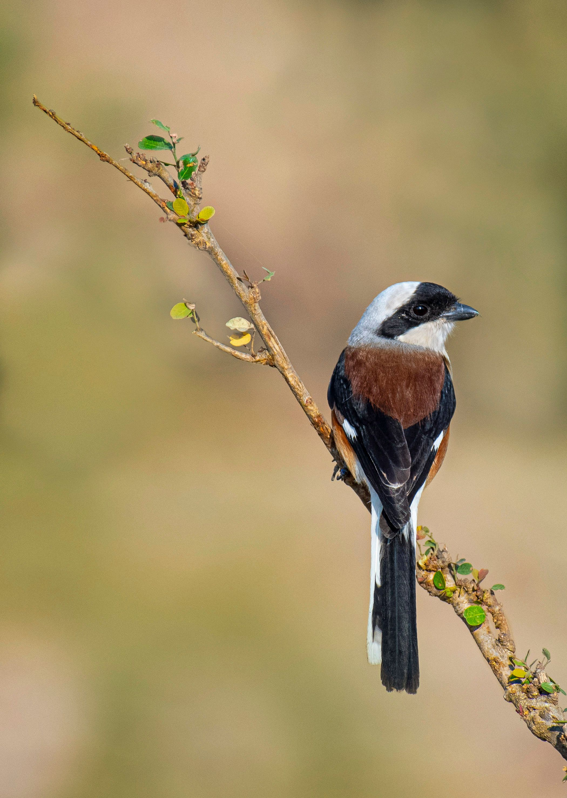

The Bay-Backed Shrike is a small, boldly marked shrike of dry open habitats. It has a grey head, black facial mask, reddish-brown back, and pale underparts. Like other shrikes, it is an efficient predator despite its small size and often waits from a prominent perch before pursuing insects and other small animals. It can be distinguished from the Long-Tailed Shrike by its smaller size, shorter tail, and distinctive rich bay-coloured back.